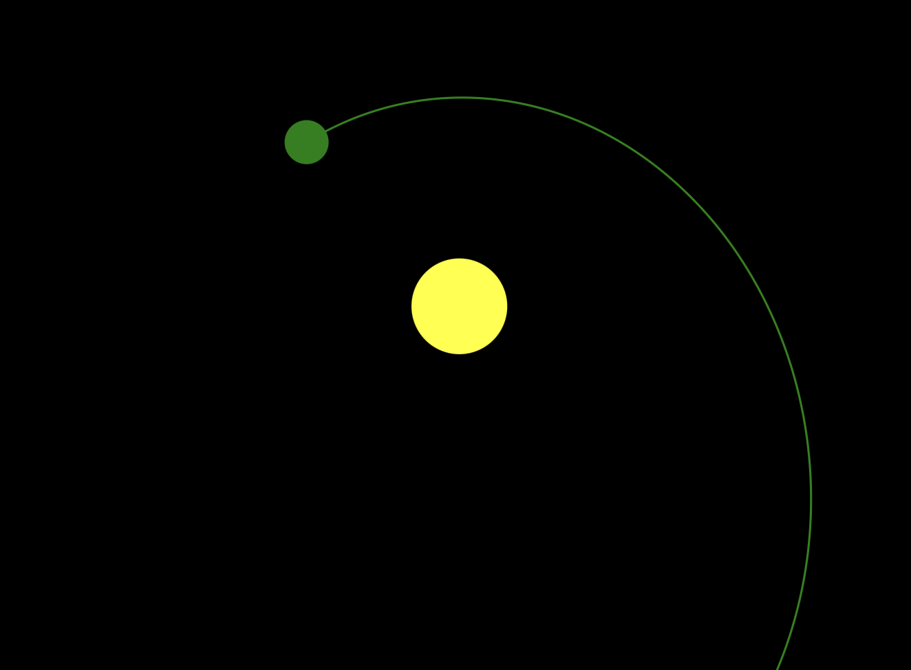
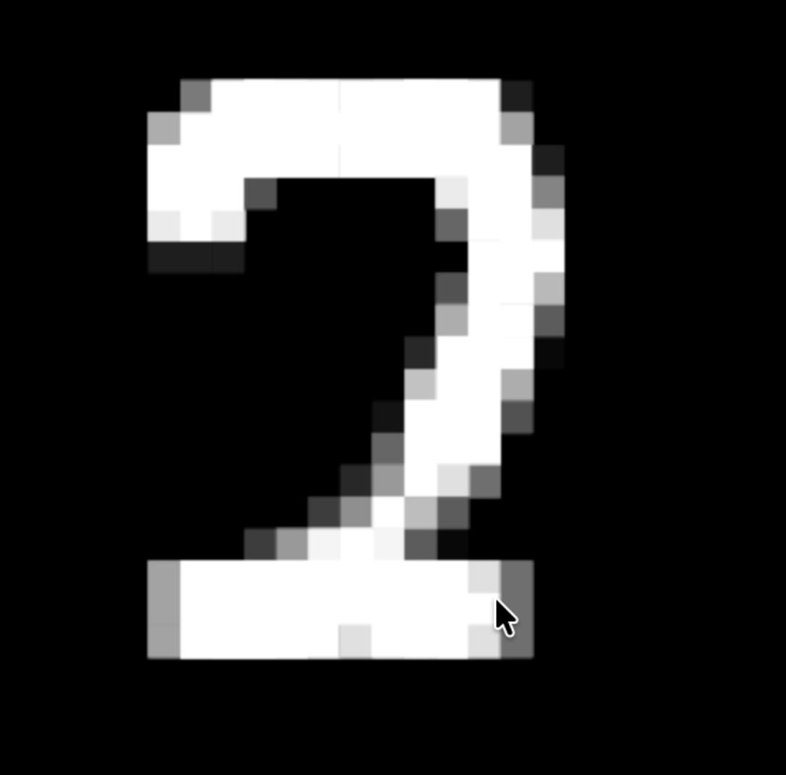
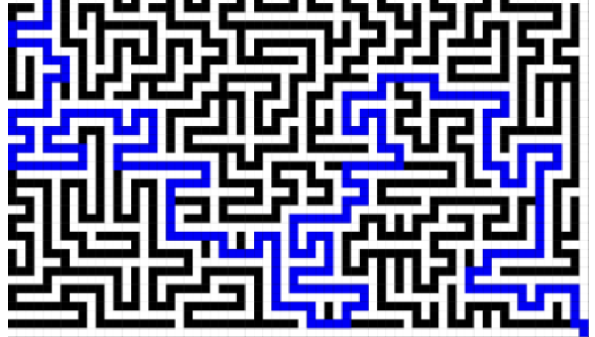
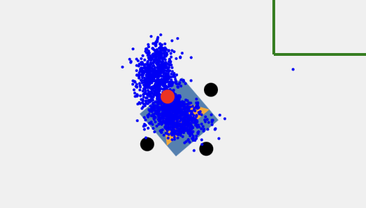
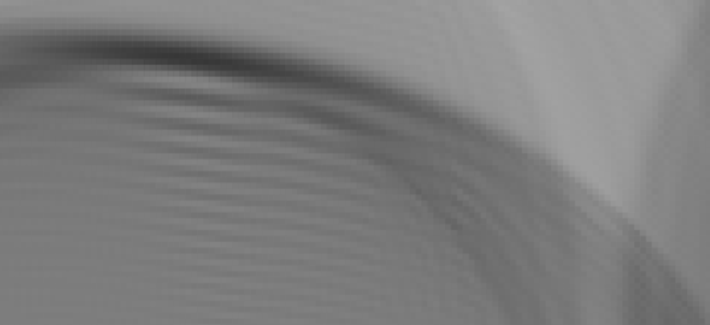
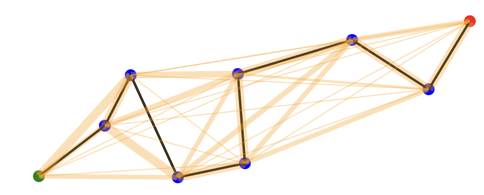
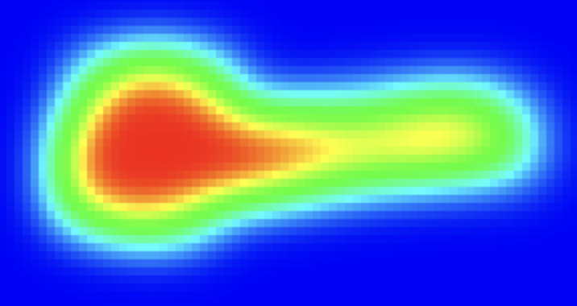
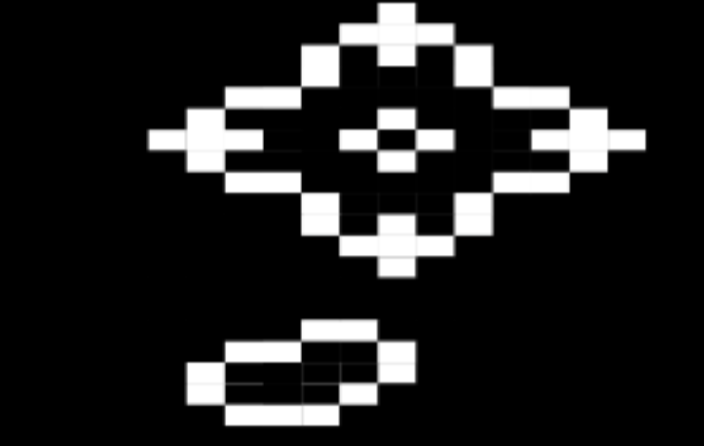

CS student @ The University of South Florida. This site is a collection of my small projects, experiments, and other interactive sandbox ideas (this and other projects can be found on the Github linked below). Most of these demos were created years ago, but I only recently added them here. Feel free to click on any of the below to interact with the projects or view the source code. Note that none of these used any AI in their creation. How can you tell? Well you will have to mainly take my word for it, but I would point out that if an LLM made this site, it would, at the very least, look better.
A common theme to observe is that almost all of these projects explore the emergence of something beautiful and complex from simple rules and interactions.

Gravitational simulation of N bodies using Newton's law of universal gravitation and Euler time integration.
Source
A totally-from-scratch (no libraries) trained neural network that recognizes handrawn black and white digits 0-9.
Source
Maze generation with the hunt-and-kill algorithm and solving with a BFS distance field followed by gradient descent back to the exit (flood fill algorithm).
Source
A simple proof of concept implementation of Monte Carlo localization to estimate robot pose (x,y,theta) given the real noisy environment and sensors.
Source
A simple implementation of the wave equation using discretized methods.
SourceA demo to show the interactions between various charged Coulombic particles like those in the nucleus of an atom.
Source
A visualization of the Traveling Salesman Problem and a simple genetic algorithm solution. The marching ants algorithm treats the nodes as "food" which virtual ants then leave pheromone trails behind to find the optimal path.
Source
A simple and fun demo of heat dispersal using finite difference methods to approximate the heat equation.
Source
A simple implementation of Conway's Game of Life, a cellular automaton devised by the British mathematician John Horton Conway.
Source